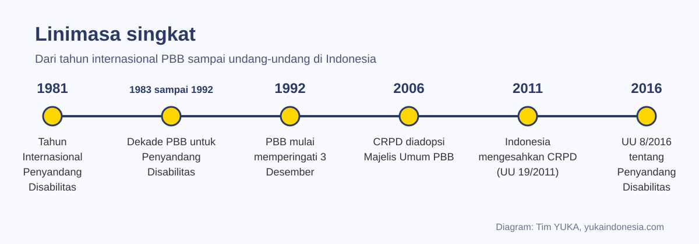
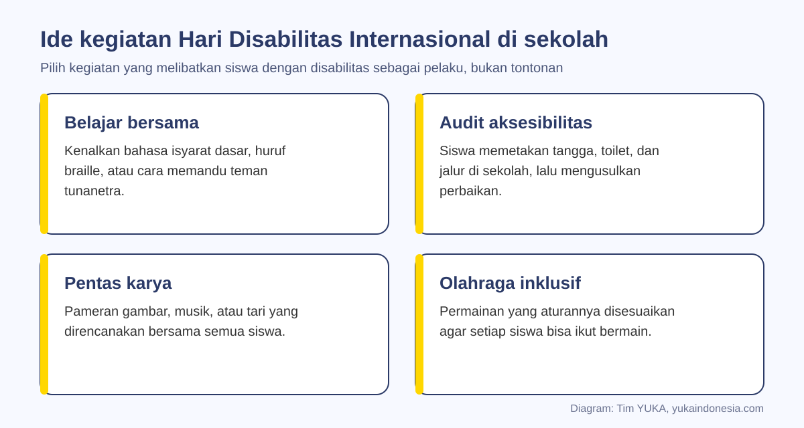
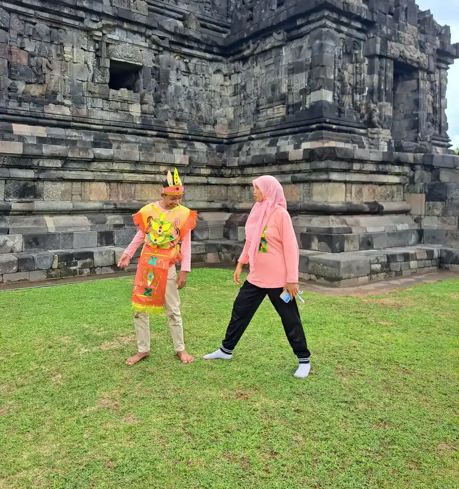

Hari Disabilitas Internasional diperingati setiap 3 Desember dan dipromosikan PBB sejak 1992 untuk meningkatkan pemahaman tentang isu disabilitas serta mendukung martabat, hak, dan kesejahteraan penyandang disabilitas. Di Indonesia, peringatan ini sejalan dengan UU 19/2011 yang mengesahkan CRPD dan UU 8/2016 tentang Penyandang Disabilitas.
Setiap 3 Desember, sekolah, komunitas, dan lembaga di berbagai negara memperingati Hari Disabilitas Internasional. Di banyak tempat, peringatan ini masih berupa seremoni: spanduk, sambutan, lalu selesai. Padahal hari ini bisa menjadi momen belajar yang bermakna, terutama bagi sekolah inklusi dan keluarga yang membesarkan anak berkebutuhan khusus.
Artikel ini membahas sejarah singkat peringatan tersebut, maknanya bagi Indonesia, prinsip merayakan yang menghormati martabat, serta ide kegiatan untuk sekolah dan keluarga. Pembahasan ini melengkapi artikel YUKA tentang penyandang disabilitas dan peringatan lain seperti Hari Autis Sedunia.
Penting sebelum membaca
Tema peringatan ditetapkan PBB setiap tahun. Artikel ini menyebut tema 2025 yang tercantum di laman resmi PBB; untuk tema tahun berjalan, periksa laman PBB menjelang Desember.
Daftar Isi
Apa Itu Hari Disabilitas Internasional
Hari Disabilitas Internasional, dalam bahasa Inggris International Day of Persons with Disabilities, adalah hari peringatan internasional yang dipromosikan Perserikatan Bangsa-Bangsa sejak 1992. Tujuannya meningkatkan pemahaman tentang isu disabilitas dan menggalang dukungan bagi martabat, hak, dan kesejahteraan penyandang disabilitas (Wikipedia: International Day of Persons with Disabilities).
Nama awalnya adalah International Day of Disabled Persons, dan baru berganti menjadi nama sekarang pada 2007. Pergantian ini mencerminkan perubahan cara pandang: yang utama adalah orangnya, bukan disabilitasnya. Di Indonesia, perubahan cara pandang serupa terlihat dari istilah resmi "penyandang disabilitas" dalam undang-undang, menggantikan istilah lama yang bernada merendahkan. Penjelasan istilah dan ragamnya ada di artikel disabilitas adalah dan golongan disabilitas apa saja.
Setiap tahun PBB menetapkan tema tertentu. Laman resmi PBB mencantumkan tema 2025, yaitu Fostering disability inclusive societies for advancing social progress, atau kurang lebih "membangun masyarakat yang inklusif disabilitas untuk memajukan kemajuan sosial" (United Nations).
Sejarah Singkat: Dari 1981 sampai CRPD
Peringatan 3 Desember tidak muncul tiba-tiba. Ia lahir dari rangkaian upaya PBB selama beberapa dekade:

| Tahun | Peristiwa | Artinya |
|---|---|---|
| 1981 | Tahun Internasional Penyandang Disabilitas (International Year of Disabled Persons) | Dunia mulai menyusun rencana aksi untuk kesetaraan penyandang disabilitas |
| 1983 sampai 1992 | Dekade PBB untuk Penyandang Disabilitas | Kurun waktu bagi pemerintah dan organisasi menjalankan rencana aksi |
| 1992 | PBB mulai mempromosikan peringatan 3 Desember | Lahirnya hari peringatan tahunan |
| 2006 | Konvensi Hak-Hak Penyandang Disabilitas (CRPD) diadopsi Majelis Umum PBB pada 13 Desember | Perjanjian hak asasi manusia khusus penyandang disabilitas, berlaku sejak 3 Mei 2008 |
| 2011 | Indonesia mengesahkan CRPD melalui UU Nomor 19 Tahun 2011 | CRPD menjadi bagian dari hukum Indonesia |
| 2016 | UU Nomor 8 Tahun 2016 tentang Penyandang Disabilitas | Hak penyandang disabilitas diatur rinci di tingkat nasional |
Sumber: sejarah Hari Disabilitas Internasional, Convention on the Rights of Persons with Disabilities, UU 19/2011, dan UU 8/2016.
Makna bagi Indonesia: UU 19/2011 dan UU 8/2016
Bagi Indonesia, Hari Disabilitas Internasional bukan sekadar peringatan dari luar negeri. Dengan UU Nomor 19 Tahun 2011, Indonesia mengesahkan CRPD, sehingga prinsip-prinsip konvensi itu mengikat negara. Lima tahun kemudian, UU Nomor 8 Tahun 2016 mengatur hak penyandang disabilitas secara rinci, mulai dari pendidikan, pekerjaan, kesehatan, sampai aksesibilitas.
Undang-undang ini juga memuat hak khusus anak penyandang disabilitas dalam Pasal 5 ayat (3), di antaranya hak atas pelindungan khusus, perawatan dan pengasuhan keluarga, serta perlakuan yang manusiawi sesuai martabat dan hak anak. Rangkuman lengkapnya ada di artikel apa saja hak anak berkebutuhan khusus.
Di sekolah, semangat ini diterjemahkan menjadi pendidikan inklusi dan akomodasi yang layak. Di masyarakat, maknanya adalah inklusi sosial: penyandang disabilitas ikut serta dalam kehidupan bersama sebagai warga yang setara, bukan objek belas kasihan. Hari Disabilitas Internasional adalah momen yang tepat untuk mengevaluasi sejauh mana hal ini sudah terwujud di lingkungan kita.
Prinsip Merayakan yang Menghormati Martabat
Niat baik bisa berujung pada perayaan yang justru merendahkan. Beberapa prinsip berikut membantu agar peringatan benar-benar menghormati penyandang disabilitas:
- Libatkan sebagai pelaku. Siswa dan warga penyandang disabilitas ikut merencanakan dan menjalankan acara, bukan sekadar ditampilkan.
- Hindari menjadikan tontonan. Jangan memamerkan anak sebagai kisah sedih untuk mengundang iba atau sebagai "inspirasi" semata karena ia beraktivitas sehari-hari.
- Minta izin. Foto, video, dan cerita tentang anak hanya dipublikasikan dengan izin anak dan keluarga.
- Pakai bahasa yang menghormati. Gunakan istilah resmi dan sebut orangnya lebih dulu.
- Tindak lanjut nyata. Peringatan lebih bermakna bila menghasilkan perubahan, misalnya perbaikan jalur landai atau pelatihan guru.
| Hindari | Lebih baik | Alasan |
|---|---|---|
| Cacat, orang cacat | Penyandang disabilitas | Istilah resmi UU 8/2016 dan tidak bernada merendahkan |
| Penderita autis | Anak autis atau anak dengan autisme | Autisme bukan penyakit yang diderita |
| Normal versus tidak normal | Anak dengan dan tanpa disabilitas | Tidak menempatkan satu kelompok sebagai ukuran |
| Terkurung di kursi roda | Pengguna kursi roda | Kursi roda adalah alat bantu mobilitas, bukan penjara |
Ide Kegiatan untuk Sekolah
Kegiatan terbaik adalah yang membuat siswa belajar sesuatu yang baru dan melibatkan semua anak. Beberapa ide yang bisa disesuaikan dengan jenjang:

- Belajar bersama. Kenalkan bahasa isyarat dasar, huruf braille, atau cara memandu teman tunanetra. Bahan awal tentang komunikasi dengan teman tunarungu ada di artikel cara berkomunikasi dengan anak tunarungu.
- Audit aksesibilitas. Siswa memetakan tangga, toilet, dan jalur di sekolah, lalu menyusun usulan perbaikan untuk kepala sekolah. Kegiatan ini sekaligus mengenalkan ragam disabilitas fisik dan disabilitas sensorik beserta kebutuhannya.
- Pentas dan pameran karya. Pameran gambar, musik, atau tari yang dirancang bersama semua siswa. Ide kegiatan seni yang inklusif ada di artikel seni dan kreativitas untuk anak disabilitas.
- Olahraga inklusif. Permainan yang aturannya disesuaikan, misalnya bola dengan lonceng atau estafet dengan jarak berbeda, agar setiap siswa bisa ikut.
- Diskusi kelas. Membaca cerita tokoh penyandang disabilitas lalu mendiskusikan hambatan yang mereka hadapi di lingkungan, bukan pada diri mereka.
Kegiatan bisa sekaligus menjadi titik awal program berkelanjutan, misalnya buddy system untuk anak ABK di sekolah yang berjalan sepanjang tahun.
Ide Kegiatan untuk Keluarga dan Komunitas
Peringatan tidak harus besar. Di rumah, keluarga bisa membaca buku cerita tentang anak dengan beragam kemampuan, menonton film yang menampilkan tokoh penyandang disabilitas secara realistis, lalu membicarakannya bersama. Bagi keluarga yang membesarkan anak berkebutuhan khusus, hari ini bisa menjadi momen merayakan kemajuan anak, sekecil apa pun.
Libatkan juga kakak atau adik. Saudara kandung sering menjadi pembela paling setia bagi saudaranya, tetapi mereka juga butuh ruang. Panduan sibling anak berkebutuhan khusus membahas cara mendampingi mereka.
Di tingkat komunitas, warga bisa mengadakan kunjungan bersama ke tempat umum yang ramah disabilitas, kerja bakti memperbaiki akses di masjid atau balai warga, atau mengundang penyandang disabilitas berbagi pengalaman tentang pekerjaan dan usaha mereka. Gagasan tentang dunia kerja yang inklusif dibahas di supported employment disabilitas di Indonesia. Rencana kunjungan yang aman untuk anak dapat mengacu pada panduan karyawisata untuk anak berkebutuhan khusus.

Setelah Peringatan: Menjaga Semangat Sepanjang Tahun
Ukuran keberhasilan Hari Disabilitas Internasional bukan meriahnya acara, melainkan apa yang berubah sesudahnya. Beberapa langkah tindak lanjut yang realistis:
- Catat usulan dari audit aksesibilitas, tetapkan penanggung jawab, dan tinjau kemajuannya beberapa bulan kemudian.
- Jadwalkan pelatihan guru tentang akomodasi yang layak dan strategi kelas inklusi.
- Pertahankan kegiatan bersama yang berhasil, misalnya klub seni inklusif atau olahraga bersama.
- Bagikan cerita kegiatan kepada orang tua dengan izin, untuk membangun dukungan komunitas.
Bagi yayasan dan sekolah inklusi seperti YUKA, semangat Hari Disabilitas Internasional adalah pekerjaan sehari-hari: memastikan setiap anak mendapat kesempatan belajar, bermain, dan berprestasi. Dukungan masyarakat, termasuk donasi pendidikan, membantu pekerjaan ini terus berjalan.
Pendampingan di YUKA
Sekolah Inklusi Taruna Imani di Sleman mendampingi anak dengan beragam kemampuan belajar bersama setiap hari, dari kegiatan kelas sampai pentas budaya. Sekolah, komunitas, atau keluarga yang ingin berdiskusi tentang kegiatan peringatan Hari Disabilitas Internasional yang inklusif dapat menghubungi tim YUKA lewat WhatsApp.
Pertanyaan yang Sering Diajukan
Kapan Hari Disabilitas Internasional diperingati?
Hari Disabilitas Internasional diperingati setiap tanggal 3 Desember. Peringatan ini dipromosikan Perserikatan Bangsa-Bangsa sejak 1992.
Apa tujuan Hari Disabilitas Internasional?
Meningkatkan pemahaman tentang isu disabilitas dan menggalang dukungan bagi martabat, hak, dan kesejahteraan penyandang disabilitas, serta mendorong partisipasi mereka dalam semua aspek kehidupan.
Apa nama resmi Hari Disabilitas Internasional dalam bahasa Inggris?
International Day of Persons with Disabilities. Sampai 2007, namanya International Day of Disabled Persons.
Apa hubungan Hari Disabilitas Internasional dengan CRPD?
Keduanya bagian dari upaya PBB untuk hak penyandang disabilitas. CRPD atau Konvensi Hak-Hak Penyandang Disabilitas diadopsi Majelis Umum PBB pada 13 Desember 2006 dan disahkan Indonesia melalui UU Nomor 19 Tahun 2011.
Apa tema Hari Disabilitas Internasional 2025?
Laman resmi PBB mencantumkan tema 2025: Fostering disability inclusive societies for advancing social progress. Tema ditetapkan setiap tahun, jadi periksa laman PBB untuk tema tahun berjalan.
Kegiatan apa yang cocok untuk memperingati Hari Disabilitas Internasional di sekolah?
Belajar bahasa isyarat atau braille, audit aksesibilitas sekolah, pentas dan pameran karya bersama, olahraga inklusif, dan diskusi kelas tentang hambatan di lingkungan. Libatkan siswa penyandang disabilitas sebagai perencana dan pelaku.
Istilah apa yang sebaiknya dipakai untuk menyebut penyandang disabilitas?
Gunakan istilah resmi penyandang disabilitas, sebut orangnya lebih dulu, dan hindari istilah seperti cacat, penderita, atau tidak normal yang bernada merendahkan.
Apa yang bisa dilakukan keluarga pada Hari Disabilitas Internasional?
Membaca buku atau menonton film yang menampilkan tokoh penyandang disabilitas secara realistis, membicarakannya bersama anak, merayakan kemajuan anak berkebutuhan khusus, dan melibatkan saudara kandung dalam kegiatan.
Bacaan Terkait
Bacaan lain tentang hak dan inklusi penyandang disabilitas:
Sumber dan Referensi
- United Nations. International Day of Persons with Disabilities (3 December)
- Wikipedia. International Day of Persons with Disabilities
- Wikipedia. Convention on the Rights of Persons with Disabilities
- Undang-Undang Nomor 19 Tahun 2011 tentang Pengesahan Convention on the Rights of Persons with Disabilities (JDIH BPK)
- Undang-Undang Nomor 8 Tahun 2016 tentang Penyandang Disabilitas (JDIH BPK)
Catatan: Artikel ini bersifat edukasi umum dan bukan pengganti saran psikolog, guru pendidikan khusus, dokter, atau tenaga profesional lain. Sumber diperiksa tim YUKA pada 5 Oktober 2026.